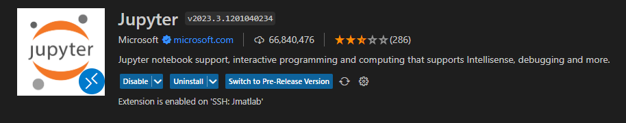
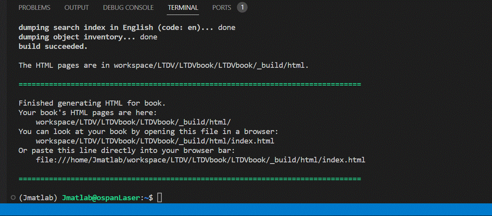

快速开始#
本地不再安装的使用方法，只需要下载好VScode能登陆服务器即可。
VS code下载#
下载好VS code之后进行相关基本配置，可以参考该网址进行配置。
提示
注意安装好SSH远程插件，以及确保是上海交通大学的校园网，如在校外请使用交大VPN。
IP配置#
VS code上连接服务器的IP配置如下：
Host Jmatlab
HostName 202.120.39.189
User Jmatlab
Port 60003
提示
直接在原有的SSH config文件下面增加上面的语句后刷新即可，原来的一些远程连接都能在列表观察到。Host自己想改啥改啥。
插件安装#
在VS code中安装插件的步骤可以参考该帖子。
注意
注意插件要安装到SSH服务器上，不仅仅是本地的安装（SSH连接服务器后再在market里面找）。
比较好用的插件包括：
Remote-SSH#
用于与服务器进行远程连接，便于查看服务器上文件等。

PYTHON#
用于在本地选用服务器的python环境。
{kind=link}
Jupyter#
用于在服务器上运行部署好的MATLAB kernel。
{kind=link}
安装好之后打开.ipynb文件就可以按下图选择不同Kernel，此处我们选择MATLAB内核。

版本问题要注意
注意服务器上的Jupyter和Python插件版本要与本地的版本一致，否则可能不能选择内核。
可能存在另外同学更新了插件版本，本地需要跟着更新的情况；尽量避免更新远程的插件
Live Server#
用于预览服务器上的网页，比如.html文件。
{kind=link}
安装完重新打开VS code，使用时候对着.html文件右键选择Open with Live Server即可。初次打开会稍微耗时，等个几分钟即可。
VS CODE设置#
重要、重要、重要
注意使用过程需要关闭VS CODE的插件自动更新，防止别人登陆JMatlab插件需要手动更新！！！！ \(\text{File} \rightarrow \text{Preferences} \rightarrow\text{Settings} \rightarrow \text{Extensions} \rightarrow \text{Input autoUpdate}\)

JUPYTER BOOK编译#
由于markdown有不同的语法比如MyST、MyST-nb等，在VS code中直接看ipynb文件有些结构无法预览，比如下面章节的框架。因此最好的预览方式是更改完.ipynb文件后，编译成.html文件进行预览。
项目结构#
一些配置都已经配置好，需要做的是找到LTDVbook的路径，然后在VS code中打开该路径下的ipynb文件，然后按照下面的步骤进行编译。
备注
整个Laser Team Data Viewer的Jupyter book项目路径为/home/Jmatlab/workspace/LTDV/LTDVbook/LTDVbook。
项目中包括
存放正文内容的.ipynb或.md文档，注意要在_toc.yml中添加对应的路径才能在结果看到。
存放使用到的图片，注意要在.ipynb或.md文档中使用相对路径。
教程快速开始界面的.ipynb文件，可以用于一些结构参考。
里面放每个人的MATLAB代码，注意按自己名字创建个文件夹，主要用于创建函数。
编译中的配置文件，目前已经调整好不需要更改。
目录结构文件，如果要新加章节等需要在里面添加对应.ipynb或者.md文档的路径。
里面是编译完成后生成的文件，在其中的html/index.html预览生成效果（使用Live Server插件打开）。
编译步骤#
添加好_toc.yml文件后，使用Live Server打开~/_build/html/index.html文件，直接运行下列语句即可新编译，刷新.html就能直接看到更改。
jupyter-book build /home/Jmatlab/workspace/LTDV/LTDVbook/LTDVbook/ --all
下面是运行的示例，只需要复制代码按回车即可。
{kind=link}
提示
登陆Jmatlab账号后，在/home/Jmatlab/HINT/JLTDV.txt中可以直接复制指令。
MATLAB代码框#
MATLAB基本代码框#
在VS code中添加代码框，注意选择Kernel为MATLAB核，在代码框中写入MATLAB代码即可，如下所示。
%plot -s 400,300
%上述表示限制输出的图像大小尺寸
clear,clc
x = linspace(0,20,1000);
y1 = 2*cos(x);
y2 = sin(2*x);
y3 = 3*sin(x);
f1 = figure(1);
plot(x,y1);
hold on;
plot(x,y2);
plot(x,y3);
grid on;
Cell里面书写MATLAB函数#
此外，一些notebook中的MATLAB操作可以参考该文档。下列示例表示如何在Cell中使用自定义的Function函数。
%%file ./LTDV/MATLABcode/Wuyong/multi_line_func.m
%上述表示创建一个.m文件，注意文件名和函数名一致
function p = multi_line_func(a,b)
% in-file comments can be added like this
a = a+1;
b = b+1;
p = a+b;
end
Created file '/home/Jmatlab/workspace/LTDV/MATLABcode/Wuyong/multi_line_func.m'.
multi_line_func(1,1)
ans =
4
高级的代码框#
以在VS code中右键code cell选择notebook cell里面的add cell tag选项，给代码框添加标签，常用的一些标签可以参考该页面。
提示
注意下拉到Tags项才能看到。 之前运行过的变量可以直接调用。
下示例展示添加了hide-output的Tags之后的代码框效果
%plot -s 400,300
f1 = figure(1);
plot(x,y1);
hold on;
plot(x,y2);
plot(x,y3);
grid on;
Show code cell output

Markdown语法速入门#
基本入门语法#
小贴士
Typora的免激活版。
Markdown基本的语法可以参考该网站。推荐Typora编辑器编写Markdown。
有些快捷键比较好用。
稍微高级一点#
特殊的边框框架可以参考MyST语法。可以看到如下的不同边框效果。
提示
该效果需要通过Jupyter-book编译产生HTML才能预览，直接MarkDown看不到。
备注
该效果需要通过Jupyter-book编译产生HTML才能预览，直接MarkDown看不到。
警告
这是一个警告框框示例。
错误
这是一个错误框框示例。
更加高级的边框可以参考Shinx与MyST的网站。可以实现如下所示的下拉高亮框效果。
Click the button to reveal!
Some hidden toggle content!
What could be inside this warning?
A whale of a joke!

(sorry)